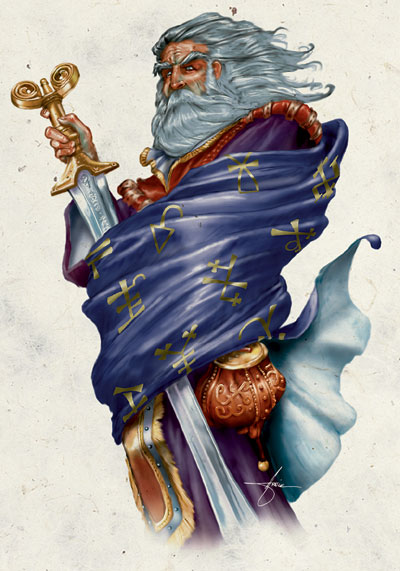
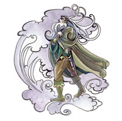

山达柯尔 Shaundakul （游历与探索之神）

费伦神系 弱等神力
别称：驭风者 Rider of the Winds，援助之手 the Helping Hand
圣徽：穿着旅者斗篷的驭风长须老者

居住界域：月之门 Gates of the Moon
阵营：混乱中立 CN
神职：旅行 travel，探索 exploration，传送门 portals，矿工 miners，商队 caravans
信徒：探险家，旅行商队，游侠，传送门使用者，半精灵
牧师阵营：混乱善良 CG，混乱中立 CN，混乱邪恶 CE
神域：风 Air，混乱 Chaos，传送门 Portal，保护 Protection，贸易 Trade，旅行 Travel
喜好武器：阴影之剑 Sword of Shadows（双手巨剑 greatsword）
山达柯尔是一位寡言的孤独神祇，祂用行动来展现自己的理念。他看似仁慈却不失严厉，有时也会展露出幽默的一面。由于祂近年来积极地降临凡间亲自吸收信徒，因此教会的规模有逐渐壮大的迹象。驭风者穿着随风飘扬的深色斗篷、皮制的轻便甲冑、以及一双从不触及地面的靴子，祂总是手持厚重的双手巨剑，以帝王般的姿态 现身。虽然高大英俊的山达柯尔行动之时寂静无声，但祂周围总是环绕着翻腾呼啸的狂风。
驭风者的教会随着歌声之城迷斯˙卓诺（Myth Drannor）的陷落而趋于式微，不过在动荡年代之后又开始重新发展－这是因为渥金（Waukeen，贸易与财富女神）在动荡年代过后失踪了十几年（她 的神殿也在那时相继崩毁），因此许多商人（特别是旅行商队）一度转而改信山达柯尔。虽然当渥金回归之后这些人大部分又回归原来的信仰，但有部分（尤其是染 上流浪癖）的商人却仍然是驭风者的忠实信徒，因此教会的规模仍维持着稳定的发展。如今，祂在城市中的神殿已吸引了许多勇敢无畏的冒险者与探险家加入，教会 也正急切地想得知他们最近冒险的相关传闻。
山达柯尔的牧师在每日清晨风向转变（因气温提升）之后祈祷以获得神术。教会内的圣日是每年的4 月15日，信徒们称这天为「驭风节」（Windride）。在当天黎明时，山达柯尔会引导祂的牧师们对自己施展「御风而行」（Wind Walk，能力不足者也会对自己施展「气化形体」Gaseous Form），然后在高空中乘风飞行。他们会在黄昏时回复原状（并安全地）着陆－通常是降落在某个他们先前从未造访过的地区。山达柯尔的牧师们也会在特定时 机或条件下举行一些仪式－每当风向发生重大转变时，他们便会进行简短的祈祷；而每当发现一个未知的地区（比如一座山谷、湖泊、或者岛屿），他们也会在首次 发现的地点附近竖立一座小型的石制王座，并在其上标示山达柯尔的圣徽（如果条件许可，还会再用「塑石术」Stone Shape建造一座驭风者的圣坛）。山达柯尔的牧师通常兼职游侠或风行者。
历史/与众神的关系 History/Relationship：
山 达柯尔是曾在月之海地区（Moonsea）广受崇敬的古老神祇（那时祂具有中等神力的强度），祂存在的历史甚至比太姬分裂成太摩拉与本莎芭时还要久远的 多。但祂的教会规模与信徒数量在迷斯˙卓诺城（Myth Drannor）陷落后亦随之衰退，祂的力量也降低到仅余微弱神力（Demigod）的程度。之后，本莎芭冒用祂的名号在蛮野牛沙漠（Anauroch） 地区挑起各游牧部族间的不合，因此时至今日当地人民都仍咒骂驭风者是「危险的沙中潜伏者」（Treacherous Lurker in the Sand）。然而，在动荡年代之后，山达柯尔的力量再度回复到弱等神力的程度，祂也与阿卡狄（Akadi，风元素女神）、梅莉凯（Mielikki，森林 女神）以及她的盟友、苏伦、太摩拉、以及精灵神系内的勇敢神祇结为盟友。由于祂不喜欢隐藏秘密，且乐于将各个隐藏地区的讯息广为流传，因此驭风者挺身而出 反对莎儿；此外，祂也与破坏其名声的本莎芭展开激烈的斗争。
教义 Dogma：
以身作则将援助之手的教导散布到世界各地去，并 努力对商旅（尤其是那些寻找新的未知土地与贸易商机的开拓者）们宣扬祂的教义。应当尽力发掘并净化祂的古老圣坛。乘上流动的风，不论它往哪去都随着它走。 信赖援助之手，帮助身陷困境之人。找出大地与海洋中所蕴含的一切宝藏。前往远方旅游，成为第一个见到初升朝阳、高耸山巅、以及肥沃山谷的人。永远让你的脚 步朝向未曾造访的地区。
牧师与神殿 Clergy & Temples：
山达柯尔的牧师们通常都会离开自己居住之地，为 旅人、贸易商队、以及探矿远征队担任向导与护卫。有许多教会内的成员为冒险队伍担任向导，或者自己也成为探险者。此外，也有少数成员加入了竖琴手同盟。无 论如何，他们都尽可能地努力寻找或频繁造访山达柯尔的废弃圣坛（尤其是位于迷斯˙卓诺城中那座宏伟神殿），直到获得充足资源后在该地重建圣坛。自从山达柯 尔将「传送门」（Portals）纳入自己管辖的神职范围之后，祂也开始指派牧师们去寻找并确认费伦大陆上各地的传送门，以利流通贸易与开展探险。
山 达柯尔喜欢信徒们建造圣坛来崇拜祂，此类圣坛大多坐落于极为偏僻（甚至毫无人烟）的地区。山达柯尔的圣坛大多是建于高处的石制讲台，其上放置一把石制座椅 （或王座），且周围有一根以上的穿孔石柱－当狂风吹过时便会发出声响。这类圣坛大都位于月之海地区（Moonsea）与科米尔地区（Comyr）的巨石地 （Stoneland），有些已经见证了上千年的历史。
山达柯尔在城市中很少有正规的神殿，连带的在城市中也没有多少信徒。由于祂的牧师们都热爱流浪，因此神殿中的驻守牧师也时常替换－每当有新成员抵达时原本的牧师便会出外探险。
山达柯尔的牧师一般都穿着深色的斗篷与适于在荒野中活动的装束，他们通常偏好银色与各种深沉的色彩。许多人也会在手套（不论是皮制或铁制）的手背处佩带圣徽。
驭 风者的教会内部组织十分松散，许多教派都独立各自为政。此外，教会内部也缺乏严谨统一的神职阶级划分－不过那些从动荡年代之前就已经侍奉驭风者的人都广受 其它成员敬重。自动荡年代之后，出现了好几个以山达柯尔之名成立的军事性组织－「临峰教团」（Fellowship of the Next Mountain）是一个由许多独立行动牧师与游侠组成的团体，其成员致力于探索剑湾（the Sword Coast）与月之海地区北部之中未知的荒野偏僻区域；而「阴影之剑骑士团」（the Knight of the Shadow Sword）是个由战士与游侠组成的菁英团体，其总部位于迷斯˙卓诺城（Myth Drannor）中的「山达柯尔王座」神殿（Shaundakul’s Throne），成员们都努力地驱逐盘据在街道上与废墟中的种种邪恶存在。最初之时，骑士团的成员们重新强化了位于迷斯˙卓诺城中这座古老神殿的防御设 施，并以之作为活动基地，然后派出许多斥候探查这座废墟城市；「西风骑手」 （Riders of the West Wind）则是个由牧师与少数游侠组成的雇佣兵团，专门护卫并带领贸易商旅穿越未知的荒野区域前往其它遥远的国度。
山达柯尔的化身 Shaundakul’s Avatar：
山 达柯尔的化身形象是一位满头白发、具备王者威仪、且高大英俊的人类男性。祂身着一件深色斗篷，这件斗篷总是不停的飘扬旋动－好像被狂风吹拂一般－因此也让 化身的轮廓看起来有些模糊不清，旁人通常只能看清祂的头部、双手、以及那把厚实的巨剑。祂在斗篷下穿着大多数游侠爱用的简朴皮甲。祂的双足从未真正地踏上 地表，因此行走时绝不会发出声响－然而祂周围总是充满了翻滚呼啸的尖锐狂风。山达柯尔可能为了响应某位正在护卫受到威胁圣坛时祈求援助的祭司而现身，或在 某位刚做出伟大无私英雄行为的忠实信徒垂死祈祷时降临。祂曾在信徒受伤或迷路时现身于他们点燃的营火边，也曾在信徒受到狼群、兽人、甚至更可怕的怪物攻击 时，响应祈祷现身保护信徒。
--
资料来源：费伦大陆信仰与神系《Faiths & Pantheons》
译者：一凡 |